31 Plot continuous data
This page will discuss appropriate plotting of continuous data, such as age, clinical measurements, and distance. We focus on use of ggplot2 (part of the tidyverse family of packages), but also brielfly describe base R plotting functions.
Visualisations covered here include:
- Plots for one continuous variable:
- Histogram, a classic graph to present the distribution of a continuous variable.
-
Box plot (also called box and whisker), to show the 25th, 50th, and 75th percentiles, tail ends of the distribution, and outliers (important limitations).
-
Jitter plot, to show all values as points that are ‘jittered’ so they can (mostly) all be seen, even where two have the same value.
- Violin plot, show the distribution of a continuous variable based on the symmetrical width of the ‘violin’.
-
Sina plot, are a combination of jitter and violin plots, where individual points are shown but in the symmetrical shape of the distribution (via ggforce package).
-
Scatter plot for two continuous variables.
- Heat plots for three continuous variables (linked to Heat plots page)
 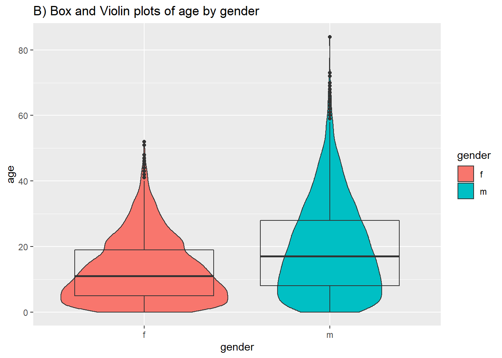
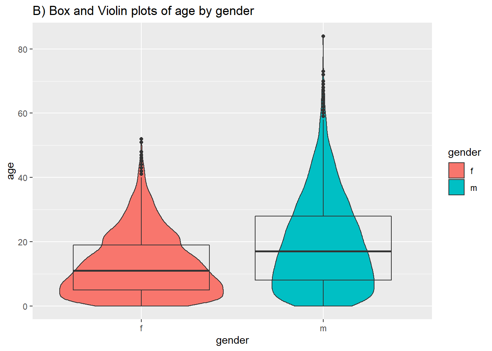
31.1 Preparation
Preparation includes loading the relevant packages, here ggplot2 and dplyr (both part of tidyverse), and ensuring your data columsn are of the correct class.
Load packages
This code chunk shows the loading of packages required for the analyses. In this handbook we emphasize p_load() from pacman, which installs the package if necessary and loads it for use. You can also load installed packages with library() from base R. See the page on R basics for more information on R packages.
Note: The mega-package tidyverse includes the pacakage ggplot2 and dplyr among many others (e.g. stringr, tidyr, and forcats).
pacman::p_load(
rio, # data import and export
here, # relative file paths
tidyverse # includes ggplot2 and dplyr
)Import data
For the examples in this section, we will use the dataset of cases from a simulated Ebola epidemic. If you want to follow along, click to download the “clean” linelist (as .rds file). The dataset is imported using the import() function from the rio package. See the page on Import and export for various ways to import data.
# import the linelist
linelist <- import("linelist_cleaned.xlsx")The first 50 rows of the linelist are displayed below. We will focus on the continuous variables age, wt_kg (weight in kilos), ct_blood (CT, cycle-threshold values), and days_onset_hosp (difference between date of symptom onset and date of hospitalisation).
Column class
Ensure that the continuous columns are correcly classified in R as class Numeric. Below we use mutate() and as.numeric()to ensure the class of the columns that are important to our analysis. The the page on Cleaning data and core functions for more detail.
linelist <- linelist %>%
mutate( # Ensure vars are class numeric
age = as.numeric(age),
ct_blood = as.numeric(ct_blood),
days_onset_hosp = as.numeric(days_onset_hosp),
wt_kg = as.numeric(wt_kg)) Note: You should have conducted various data checks before this point, including checking the missingness of the data. See the page Missing data for tips on these analyses.
31.2 One continuous variable
Histograms
Below is code for generating histograms, which group continuous data into ranges and display in adjacent bars of varying height. This is done using geom_histogram(). See the section in Plot categorical data to understand difference between geom_histogram(), geom_bar(), and geom_col().
We will show the distribution of ages of cases. Within aes() specify which column you want to see the distribution of. You can assign this column to either the x or the y axis.
For the plot, the cases will be assigned to “bins” which will be represented by bars. If the number of bins (bins = in geom_histogram()) is unspecified, R will guess an appropriate number of bins and print this message to let you know:
## `stat_bin()` using `bins = 30`. Pick better value with `binwidth`.Alternatively, you can specify binwidth = within geom_histogram() to specify the range of values that the bin includes. In contrast, if using bins = the break points are evenly spaced between the minimum and maximum values of the histogram. We give a few examples showing different bins and bin widths.
# A) Regular histogram
ggplot(data = linelist, aes(x = age))+ # provide x variable
geom_histogram()+
labs(title = "A) Default histogram (30 bins)")
# B) More bins
ggplot(data = linelist, aes(x = age))+ # provide x variable
geom_histogram(bins = 50)+
labs(title = "B) Set to 50 bins")
# C) Fewer bins
ggplot(data = linelist, aes(x = age))+ # provide x variable
geom_histogram(bins = 5)+
labs(title = "C) Set to 5 bins")
# C) More bins
ggplot(data = linelist, aes(x = age))+ # provide x variable
geom_histogram(binwidth = 1)+
labs(title = "D) binwidth of 1")
 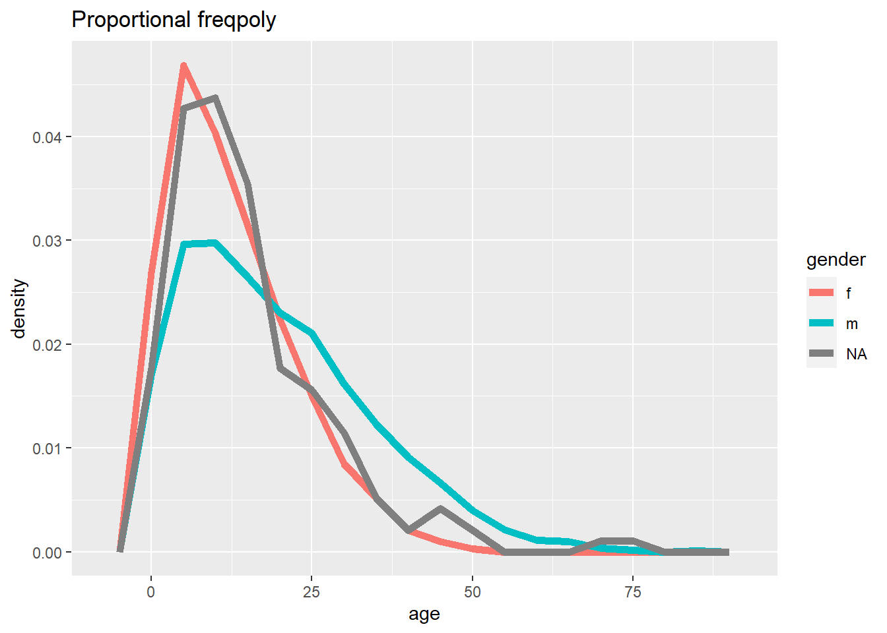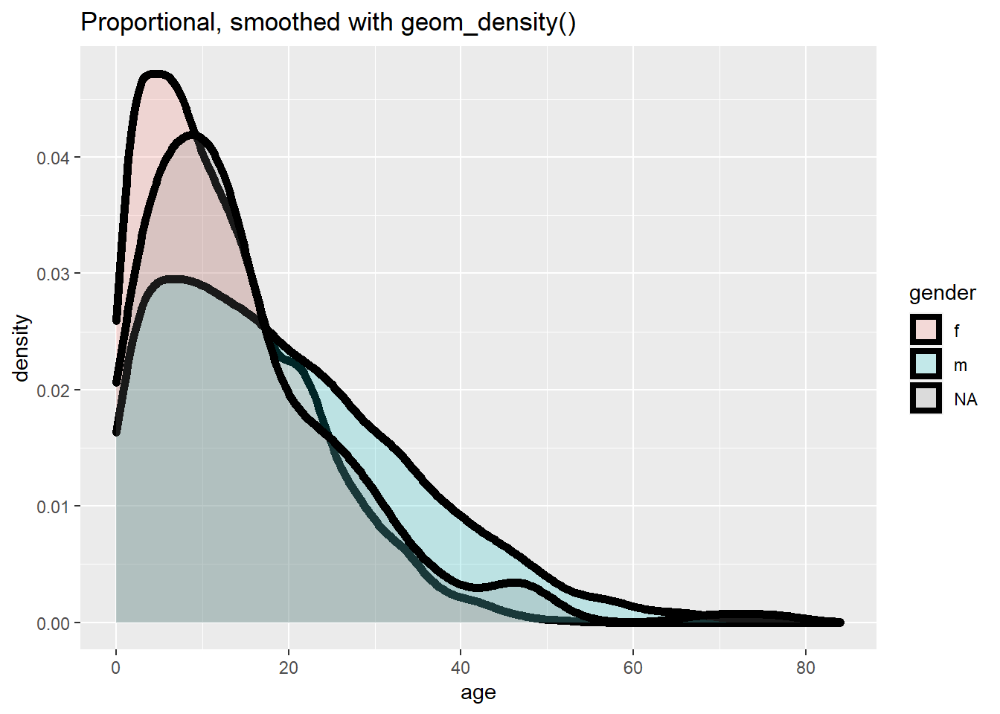
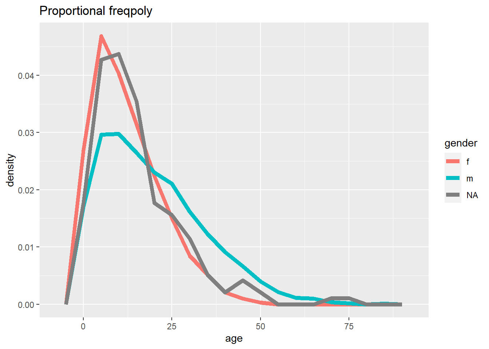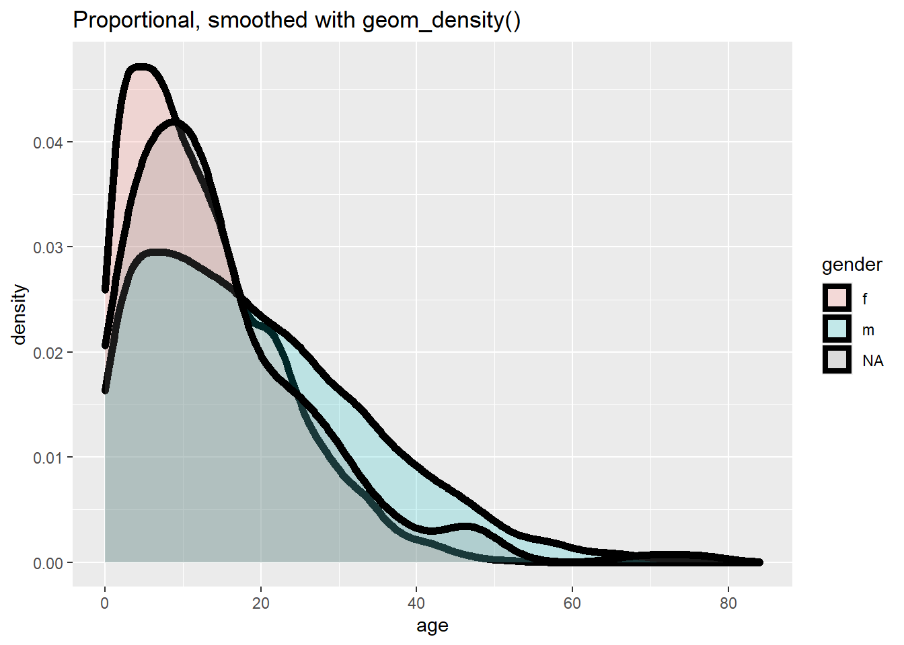
Rather than counts, you can change the stats within the aes() bracket to specify proportions - see (plot A) below. You can also layer different histograms with different settings (plot B).
# A) Histogram with proportion
ggplot(data = linelist, aes(x = ct_blood, # provide x variable
y = stat(density)))+ # Calculate proportion
geom_histogram(bins=10, # Add bin number
color = "white")+ # Add white outline so bars can easily be distinguished
labs(title = "A) Ggplot histogram showing proportion")
# B) Layered histograms with different bin widths
ggplot(data = linelist, aes(x = ct_blood))+ # provide x variable
geom_histogram(binwidth = 2) + # Underlying layer has binwidth of 2
geom_histogram(binwidth = 1, # Top layer has binwidth of 1
alpha = 0.4, # Set top layer to be slightly see through
fill = "blue")+
labs(title = "B) Layered ggplot histograms")

To get a “stacked” histogram (of a continuous column of data), you can do one of the following:
- Use
geom_histogram()with thefill =argument withinaes()and assigned to the grouping column, or
- Use
geom_freqpoly(), which is likely easier to read than the above option. You can still setbinwidth =etc.
- To see proportions of all values, , set the
y = after_stat(density)(use this syntax exactly - not changed for your data)
- Note these proportions will show per group
- To get smoothed proportions, you can use
geom_density()
Each is shown below (*note use of color = vs. fill = in each):
# "Stacked" histogram
ggplot(data = linelist, mapping = aes(x = age, fill = gender)) +
geom_histogram(binwidth = 2)+
labs(title = "'Stacked' histogram")
# Frequency
ggplot(data = linelist, mapping = aes(x = age, color = gender)) +
geom_freqpoly(binwidth = 2, size = 2)+
labs(title = "Freqpoly")
# Frequency with proportion axis
ggplot(data = linelist, mapping = aes(x = age, y = after_stat(density), color = gender)) +
geom_freqpoly(binwidth = 5, size = 2)+
labs(title = "Proportional freqpoly")
# Frequency with proportion axis, smoothed
ggplot(data = linelist, mapping = aes(x = age, y = after_stat(density), fill = gender)) +
geom_density(binwidth = 2, size = 2, alpha = 0.2)+
labs(title = "Proportional, smoothed with geom_density()")


If you want to have some fun, try geom_density_ridges from the ggridges package (vignette here.
Read more in detail about histograms at the tidyverse page on geom_histogram().
Box plots
Box plots are common, but have important limitations. They can obscure the actual distribution - e.g. a bi-modal distribution. See this R graph gallery and this data-to-viz article for more details. However, they do nicely display the inter-quartile range and outliers - so they can be overlaid on top of other types of plots that show the distribution in more detail.
Below is the box plot anatomy (image source).

When using geom_boxplot() to create a box plot, you generally map only one axis (x or y) within aes(). The axis specified determines if the plots are horizontal or vertical.
In most geoms, you create a plot per group by mapping an aesthetic like color = or fill = to a column within aes(). However, for box plots achieve this by assigning the grouping column to the un-assigned axis (x or y). Below is code for a boxplot of all age values in the dataset, and second is code to display one box plot for each (non-missing) gender in the dataset. Note that ‘NA’ (missing) values will appear as a separate box plot unless removed. In this example we also set the fill to the column outcome so each plot is a different color - but this is not necessary.
# A) Overall boxplot
ggplot(data = linelist)+
geom_boxplot(mapping = aes(y = age))+ # only y axis mapped (not x)
labs(title = "A) Overall boxplot")
# B) Box plot by group
ggplot(data = linelist, mapping = aes(y = age, x = gender, fill = gender)) +
geom_boxplot()+
labs(title = "B) Boxplot by gender") 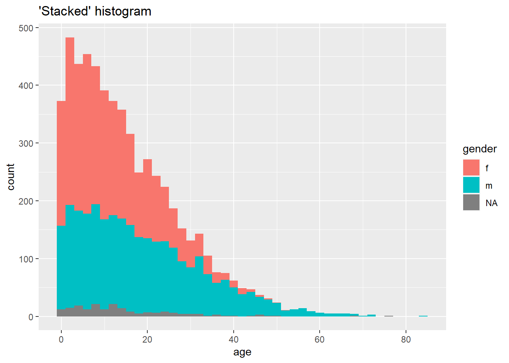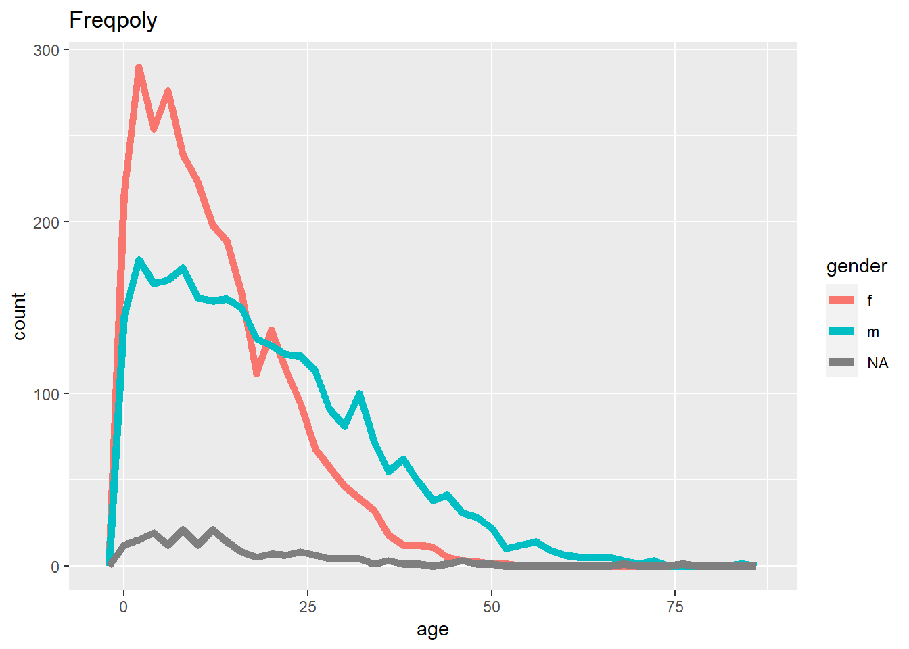
For code to add a box plot to the edges of a scatter plot (“marginal” plots) see the page ggplot tips.
Violin, jitter, and sina plots
Below is code for creating violin plots (geom_violin) and jitter plots (geom_jitter) to show age distributions. You can specify that the fill or color is also determined by the data, thereby inserting these options within aes().
# A) Jitter plot by group
ggplot(data = linelist %>% drop_na(outcome),
mapping = aes(y = age, # Continuous variable
x = outcome, # Grouping variable
color = outcome))+ # Color variable
geom_jitter()+ # Create the violin plot
labs(title = "A) jitter plot by gender")
# B) Violin plot by group
ggplot(data = linelist %>% drop_na(outcome),
mapping = aes(y = age, # Continuous variable
x = outcome, # Grouping variable
fill = outcome))+ # fill variable (color)
geom_violin()+ # create the violin plot
labs(title = "B) violin plot by gender") 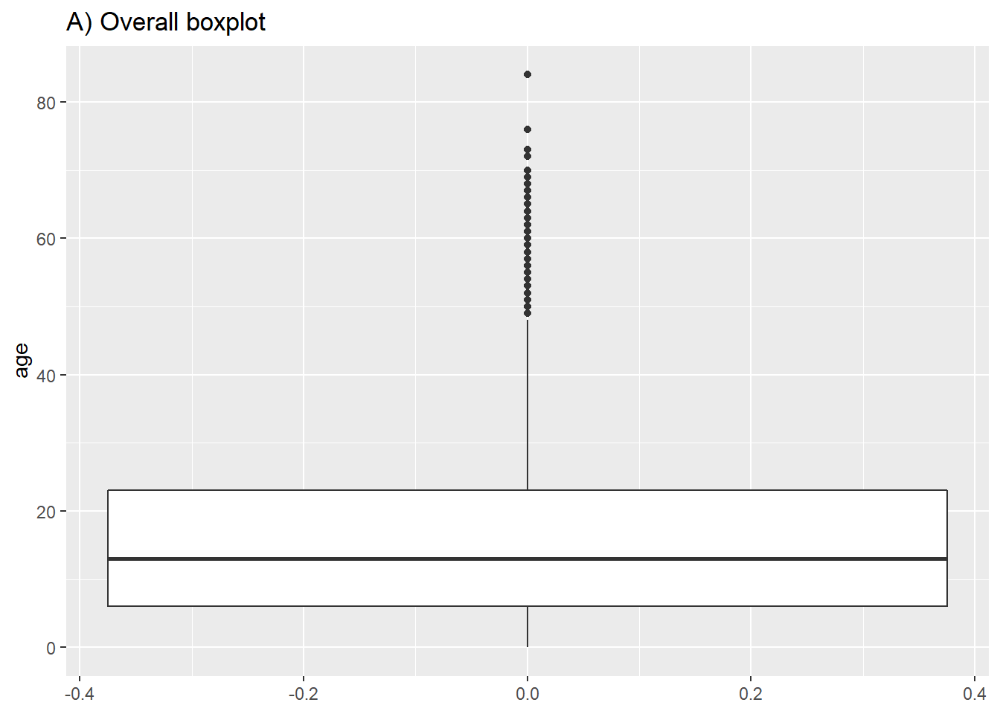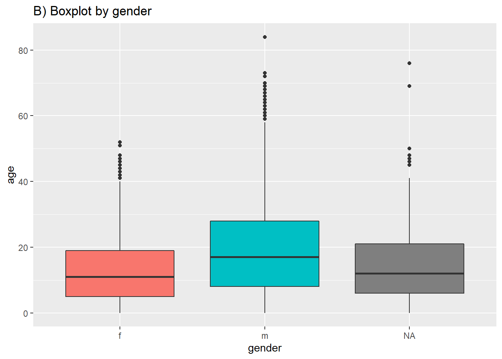
One can combine the two using the geom_sina() function from the ggforce package. This can be easier to visually interpret. A) on the left shows basic layering of both a geom_violin() and geom_sina(). B) shows slightly more effort put into the appearance of the ggplot (see in-line comments).
pacman::p_load(ggforce)
# A) Sina plot by group
ggplot(data = linelist %>% drop_na(outcome),
aes(y = age, # numeric variable
x = outcome)) + # group variable
geom_violin()+ # create the violin plot
geom_sina()+
labs(title = "A) violin and sina plot by gender")
# A) Sina plot by group
ggplot(data = linelist %>% drop_na(outcome),
aes(y = age, # numeric variable
x = outcome)) + # group variable
geom_violin(aes(fill = outcome), # fill variable (color of violin background)
color = "white", # Plot has white outline rather than default black
alpha = 0.2)+ # Alpha value where 0 transparent to 1 opaque
geom_sina(size=1, # Change the size of the jitter
aes(color = outcome))+ # color variable (color of dots)
scale_fill_manual(values = c("Death" = "#bf5300",
"Recover" = "#11118c")) + # Define colours for death/recover
# (but note they will come out a bit transparent)
scale_color_manual(values = c("Death" = "#bf5300",
"Recover" = "#11118c")) + # Define colours for death/recover
theme_minimal() + # Remove the gray background
theme(legend.position = "none") + # Remove unnecessary legend
labs(title = "B) violin and sina plot by gender, with extra formatting") 

31.3 Two continuous variables
Following similar syntax, geom_point() will allow one to plot two continuous variables against eachother in a scatter plot. This is useful for showing actual values rather than their distributions.
A basic scatter plot of age vs weight is shown in (A). In (B) we again use facet_grid() to show the relationship between two continuous variables in the linelist.
# Basic scatter plot of weight and age
ggplot(data = linelist,
aes(y = wt_kg, x = age))+
geom_point() +
labs(title = "A) Scatter plot of weight and age")
# Scatter plot of weight and age by gender and Ebola outcome
ggplot(data = linelist %>% drop_na(gender, outcome), # filter retains non-missing gender/outcome
aes(y = wt_kg, x = age))+
geom_point() +
labs(title = "B) Scatter plot of weight and age faceted by gender and outcome")+
facet_grid(gender~outcome) 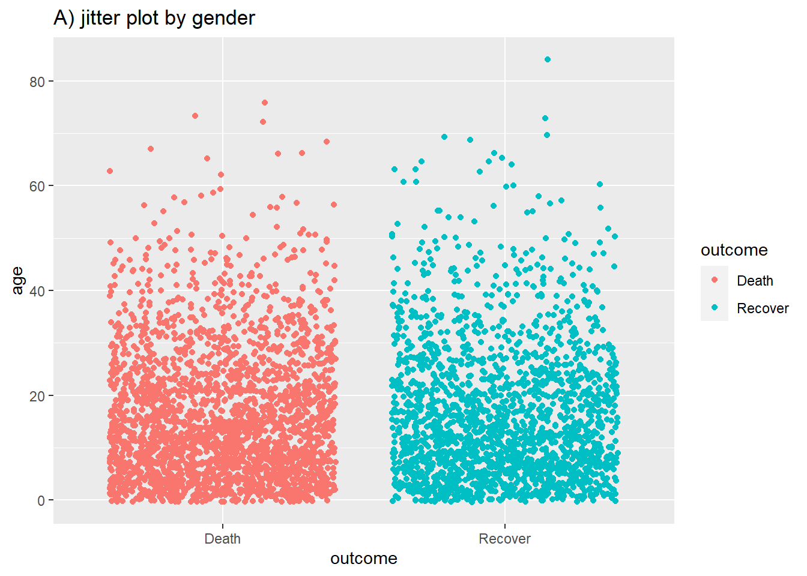
31.4 Plotting with base graphics
Using base graphics can sometimes be quicker than ggplot, and is helpful for that initial first look.
One continuous variable
Box plots and histograms
The in-built graphics package comes with the boxplot() and hist() functions, allowing straight-forward visualisation of a continuous variable.
# Boxplot
boxplot(linelist$wt_kg,
main = "A) Base boxplot")
# Histogram
hist(linelist$wt_kg,
main = "B) Base histogram") 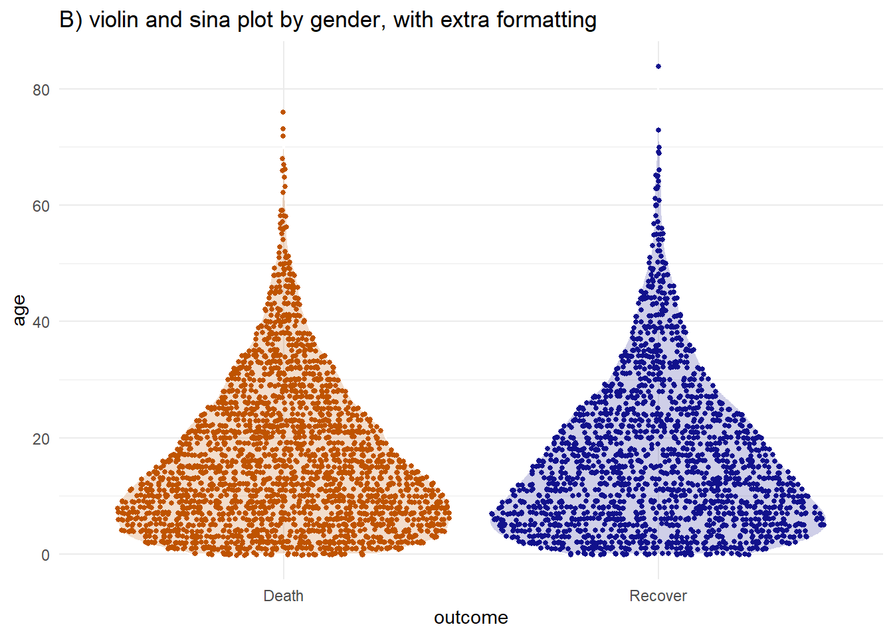
Further customisation
Subgroups can also be shown, by subgroup or crossed groups. Note how with plot B below, outcome and gender are written as outcome*gender such that the boxplots are for the four combinations of the two columns. They do not get facetted across different rows and columns like in ggplot2.
We specify linelist as the dataset so we do not need to write age as linelist$age
# Box plot by subgroup
boxplot(age ~ outcome,
data = linelist,
main = "A) Base boxplot by subgroup")
# Box plot by crossed subgroups
boxplot(age ~ outcome*gender,
data = linelist,
main = "B) Base boxplot) by crossed groups")

Some further options with boxplot() shown below are:
- Boxplot width proportional to sample size (A)
- Violin plots, with notched representing the median and x around it (B)
- Horizontal (C)
# Varying width by sample size
boxplot(linelist$age ~ linelist$outcome,
varwidth = TRUE, # width varying by sample size
main="A) Proportional boxplot() widths")
# Notched (violin plot), and varying width
boxplot(age ~ outcome,
data=linelist,
notch=TRUE, # notch at median
main="B) Notched boxplot()",
col=(c("gold","darkgreen")),
xlab="Suppliment and Dose")
# Horizontal
boxplot(age ~ outcome,
data=linelist,
horizontal=TRUE, # flip to horizontal
col=(c("gold","darkgreen")),
main="C) Horizontal boxplot()",
xlab="Suppliment and Dose")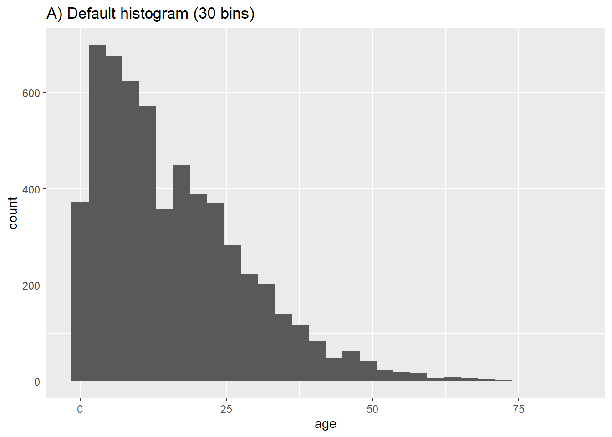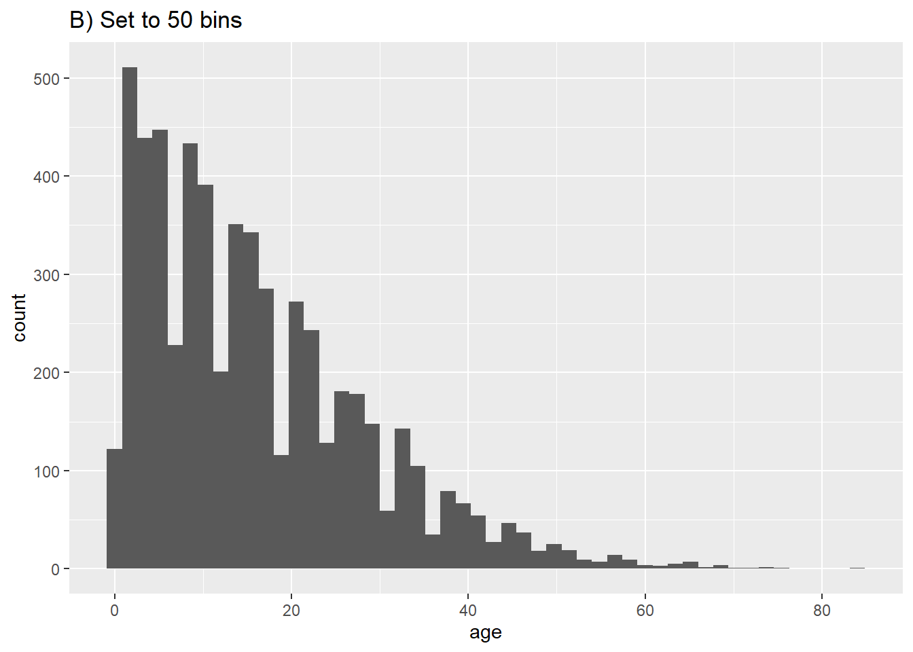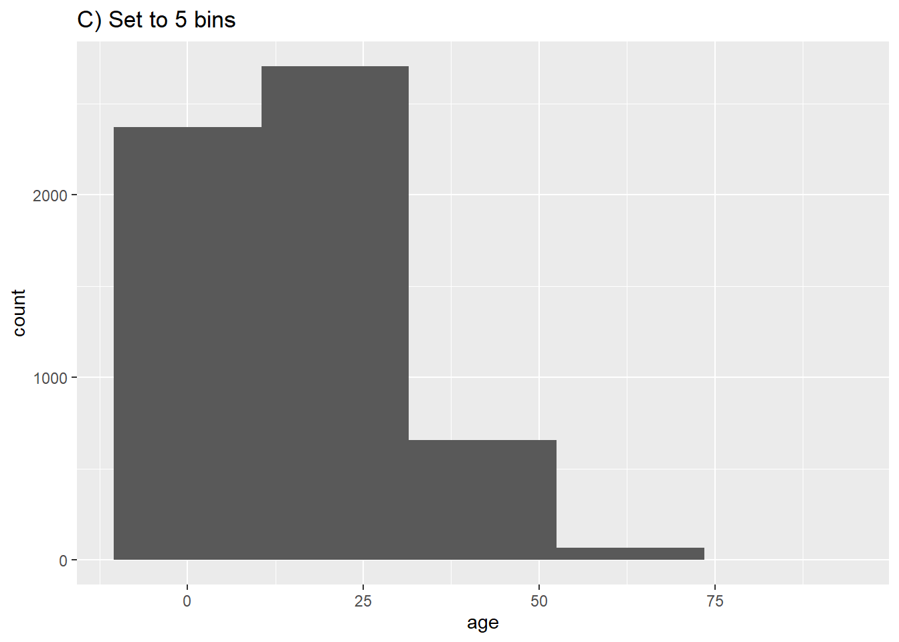
Two continuous variables
Using base R, we can quickly visualise the relationship between two continuous variables with the plot function.
plot(linelist$age, linelist$wt_kg)